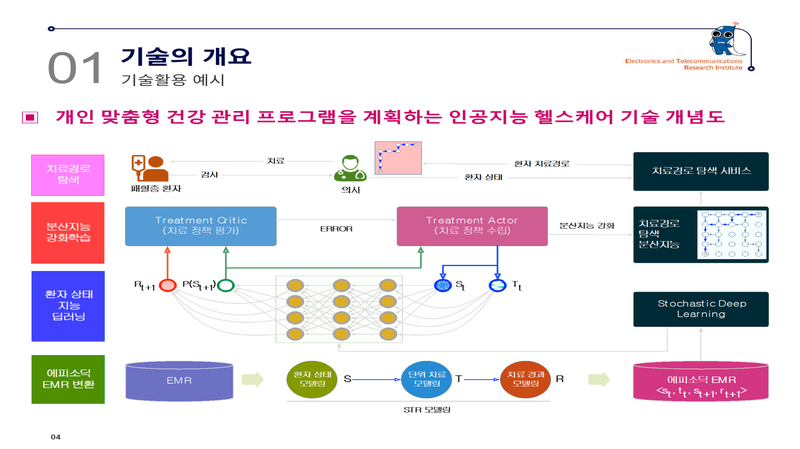

디지털 헬스케어맞춤형 치료계획 ETRI Technology Marketing
개인 맞춤형 건강 관리 프로그램을 계획하는 인공지능 헬스케어 기술
유사 치료 사례와 의사의 정책을 반영해 치료 수단·시기·순서로 구성된 장기 치료 프로그램 계획
기술 개요
- 유사 치료 에피소드를 참조해 환자별 치료 프로그램을 계획
- 의사의 치료 정책을 반영해 현실적인 치료 수단을 탐색
- 현재 추천을 넘어 최적 치료 시기와 퇴원까지의 장기 치료 순서를 제시
기존 방식 대비 차별성
기존 기술
- 현재 상태 기준 1회성 치료 추천
- 최적 치료 시기 예측 한계
- 의사 정책과 상이한 추천 가능성
ETRI 기술
- 의사 정책을 고려한 치료 추천
- 치료 수단과 최적 시기 제안
- 장기 치료 프로그램과 근거 제공
활용 분야 및 기대효과
적용 서비스
치료계획 지원임상 경로 관리개인건강관리병원 AI 플랫폼
도입 효과
- 장기 치료목표 중심의 계획 수립
- 의료진 정책을 반영한 추천 안전성 강화
- 치료 시뮬레이션 기반 의사결정 지원

핵심 이전기술
예후 모델 연계미래 건강상태와 비결정적 예후 예측 활용
치료 탐색모델 기반 강화학습으로 치료 수단·시기 탐색
사례 기반 계획유사 환자 사례를 참조한 장기 치료 순서 생성
근거 제시계획된 치료 프로그램과 추천 수단의 근거 제공
기술이전 정보
기술번호5310-2023-00421
연구조직ETRI 의료정보연구실
제공 범위치료탐색·프로그램계획 강화학습 SW
연계 조건예후예측 계열 기반기술 중 1건 이상 필요